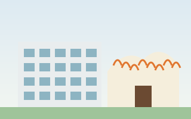

箕面船場阪大前駅周辺
大阪船場繊維卸商団地
大阪市の船場で商いをしていた繊維卸問屋が集団で移転してできた商業団地。愛称は「COM ART HILL」。1963年に移転が決まり、1967年に造成開始、1970年に街開き、1978年までに移転が完了しました。団地の総面積は約73万m²。繊維業界の変化とともに、いまは大学や文化施設、住宅も並ぶまちへと姿を変えています。
箕面市は大阪都市圏のベッドタウンとして発展してきたまちです。その一方で、船場から移ってきた繊維問屋街、駅と一体の商業施設、大学、クラフトビール、そして北部・止々呂美のゆずや山椒など、暮らしを支える産業も育ってきました。
阪急電鉄の前身・箕面有馬電気軌道が1910年に箕面線を開業。箕面の滝や社寺への観光客を運ぶとともに、同じ年には箕面動物園も開業しました（1916年閉園）。
1911年ごろから桜井、1922年ごろから桜ヶ丘で住宅地の開発が始まり、箕面・牧落・桜井の各駅を中心に市街化が進みました。
1970年の大阪万博の頃には新御堂筋が延び、船場に繊維卸商団地が街開き。その後も粟生・小野原・萱野などで住宅地の開発が続きました。
北大阪急行が箕面萱野駅まで延伸開業。駅周辺では商業施設の拡張や、船場での大学・文化施設の整備が進みました。
大阪市の船場で商いをしていた繊維卸問屋が集団で移転してできた商業団地。愛称は「COM ART HILL」。1963年に移転が決まり、1967年に造成開始、1970年に街開き、1978年までに移転が完了しました。団地の総面積は約73万m²。繊維業界の変化とともに、いまは大学や文化施設、住宅も並ぶまちへと姿を変えています。
2003年に「箕面マーケットパーク ヴィソラ」として完成した大型商業施設で、現在の名称はみのおキューズモール。100店舗以上が入り、敷地には水遊びのできる小川もあります。2024年3月23日には、駅ビルと高架下の店舗からなる「STATION棟」が北急延伸と同じ日に開業しました。

大阪大学の外国語学部が学ぶ箕面キャンパスは、2021年4月に粟生間谷東から船場へ移転しました。隣には市立の文化芸能劇場、船場図書館、船場生涯学習センターが開館。船場図書館は大阪大学の外国学図書館と一体で運用されています。

府営箕面公園（83.8ha）を中心に、滝道沿いの茶店・みやげ物店、温泉ホテル、社寺が観光を支えます。阪急箕面駅前の「箕面 交通・観光案内所」では、観光や交通の案内、観光ボランティアガイドの受付を行っています。

箕面ビールは1996年に設立され、1997年から牧落で醸造を続けるブルワリー。「ビールを醸して、人を醸す」を掲げ、毎日の食卓に合う「デイリービール」を目指しています。地元の柚子や近隣の果物を使ったビールもつくられています。
箕面市はボートレース住之江（大阪市住之江区）を施行しています。1954年に箕面・豊川競艇組合として初開催し、1956年の市制施行を機に市単独での開催に。2025年度末までに収益から約1,803億円を一般会計などへ繰り出しており、北急延伸の財源や新しい市立病院の整備にも充てられています。
市内の水田などの農地は宅地や商業施設の開発で年々減っていますが、北部の止々呂美や東部の田園地帯では、いまも特色ある農業が続いています。本店を桜井に置く大阪北部農業協同組合（JA大阪北部）も地域の農業を支えています。

箕面は大阪府内で唯一、柚子を出荷生産している産地。止々呂美地区ではおよそ40軒の農家が、接ぎ木ではなく種から育てる「実生ゆず」を栽培しています。収穫量が少ない分、大粒で香りが高いのが特徴です。

4月中旬から月末にかけて花山椒を収穫し、5月中旬から月末には実山椒の「たる漬け」を行います。塩漬けにした実山椒は約2年保存でき、醤油と酒で炊くと佃煮になります。

毎週日曜の午前中に開かれる止々呂美ふれあい朝市では、トマトやきゅうりなどの野菜、切り花に加え、特産のびわやくわの実、ゆずマーマレードや山椒の加工品が並びます。
田畑の広がる地域で開かれる石丸ヘルシーファーム朝市では、農家が育てた旬の野菜を販売。月に一度の「芝楽市」では、市内や能勢町・豊能町でとれた野菜や果物、平飼い地鶏の卵なども並びます。